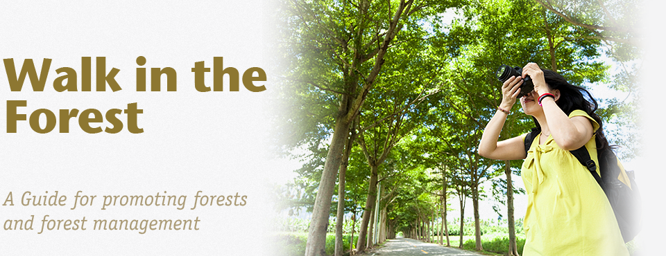
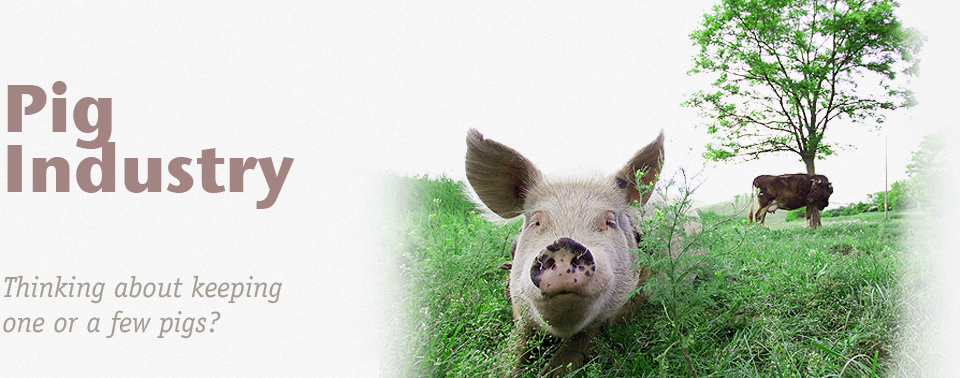

Featured Resources
Challenges for Dairy Farmers Caused by Changes in the Milk Market and the Market Environment
The planned phasing out of milk quotas in the EU, and the transition phase takes place in a highly dynamic environment. In the wake of reforms of the milk market the Commission and the Council extended the quota system several times, since it was established only for a limited period. The current scheme runs until the milk quota year 2014\/2015. The Commission has already stated that a further extension of the milk quota is not proposed and the phasing out of quota regime is planned.